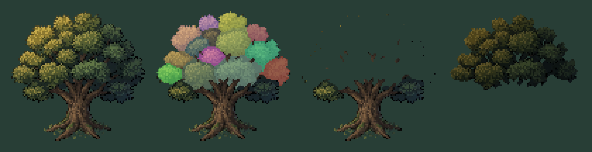
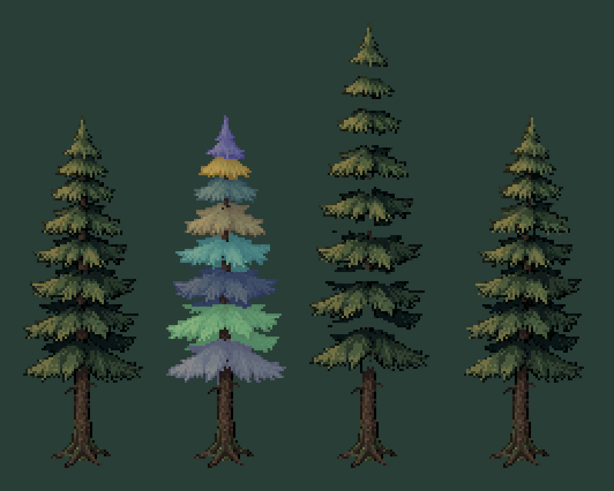
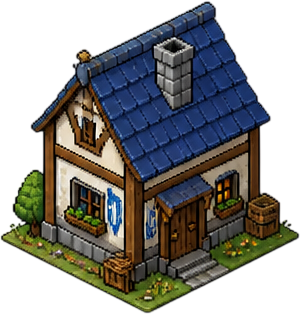
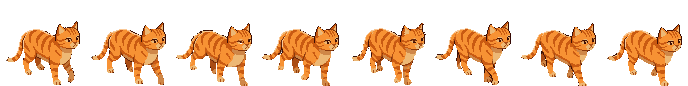
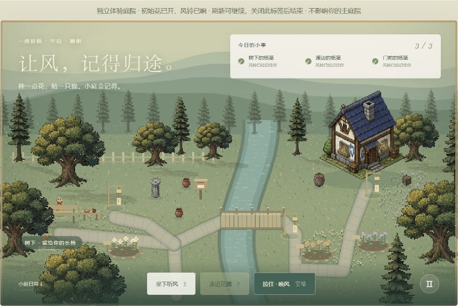
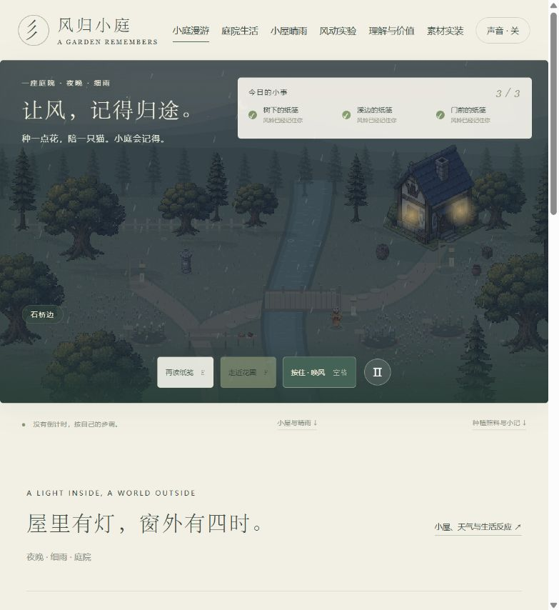

先获得统一、可辨识的形象。
树木、角色、建筑和道具提供视觉基础。我们核对来源、像素网格、尺度和实际用途，让它们进入同一座庭院。
我们先被像素树的风动吸引，研究原图怎样拆层、怎样依次回应同一阵风；再把真实树图、免费角色、建筑和道具放进庭院。沿着送风、照料、布置与故事，我们才逐步追问游戏的价值，以及有自主生活的 AI 居民能带来什么。
看原素材 → 试研究效果 → 看庭院中的用途 → 问玩家与创作价值 → 选择下一步验证。
图中保留原始素材、分层和真实运行画面；下方能实时送风、打开证据、继续阅读设计。
当前边界素材与庭院效果已接入；在线生成 / MCP / API 未连接。现有猫由规则驱动，来信为预写内容；真实 AI 居民、自然对话与完整模式尚未接入。
树木、角色、建筑和道具提供视觉基础。我们核对来源、像素网格、尺度和实际用途，让它们进入同一座庭院。
拆层、风场、行波和回弹形成可复用效果；送风、照料、布置、故事与保存让变化进入可玩的日常。
扩展自有素材、事件与角色；研究视频环境和三维花园的迁移，再接入有自主日常、平等交流的 AI 居民。后几项仍待实现和验证。

发现入口是 Viking 的分享，主要研究参考是 SpriteCook 的树木风动文章。素材制作、技术美术、游戏体验与角色智能是不同环节；我们沿着它们逐步推进，没有把平台样例当成一整款游戏。




2 个角色、1 座住宅、6 类道具，共 10 个原始 PNG。旅人只有待机帧，移动由游戏规则实现；猫另有待机和行走。
逐项用途、情绪取舍与许可 →怎样理解 SpriteCook：依据已归档的官方介绍，它提供 AI 辅助素材制作与 Agent 工具接入方向，免费页只是样例入口。我们本轮验证的是样例使用和程序风动，尚未验证其在线生成质量或费用收益。
已经沉淀：原件与哈希、图层、共享运动模块、可调参数、同素材对照、实际场景、玩法和状态保存。建筑与道具包附 CC0 通知；角色许可差异保守按 sample license 保留；文章图保留原作者署名，作为结构与效果研究对照，不标为免费样例。
下面加载真实树木 PNG，并直接复用实验页的脚本、风场与树木模块。三个画面依次回答：原貌是什么，整树变形是什么，保留骨架并分层响应有什么不同。切换树种、展开分层，再观察时序和回落。
先认清轮廓、树根与叶团的位置，建立同素材对照。
根部固定、上部偏移。它是对照手法，适合性取决于植物结构。
固定树干，树冠按位置延迟；整像素移动，10 次/秒更新姿态。风停后逐渐归于静止。
这是真实实时渲染，独立于庭院进度；不读写玩家存档。随机时序用于比较，庭院采用位置相关的行波。姿态更新为 10 Hz，页面渲染并不限于 10 帧。
以下均为 2026.11.16 已保存的真实运行画面。树木参与同一风场，角色服从移动和通行规则，房子成为可进出的地点，道具进入布置与故事。游戏中的花、家具、信箱、室内和天气规则由本站制作。



图谱中的风动对照截取自 1264×2096 原截图的 (40,405)–(1226,840)；夜雨截取自 783×854 原截图的 (0,84)–(768,566)。庭院和室内沿用既有场景裁切。仅裁取和等比排版，未重画、拼接游戏场景或伪造 UI；完整画面可点开核对。
最初验证的是 SpriteCook 样例与树木分层风动怎样进入真实游戏。现在原型已把场景、操作、生活变化与本地记忆连起来。
三处纸笺和风铃，走近、阅读、送出柔风获得回应。三块花圃、三种花，照料与雨水参与生长，已开的花会留下。
去庭院照料 →猫自主散步、看花、晒太阳与亲近，雨夜回屋。玩家可进出小屋、看实时窗景、在炉边停留和开关桌灯；昼夜与天气一起影响环境。
看生活怎样回应天气 →两只花盆独立移动，长椅与茶桌成组安放，小径有三种走向、两种铺面。预览、空间检查与一次撤回接入实际碰撞和寻路。
看布置怎样进入玩法 →预写来信回应选择、布置与停留，旧信可重读。风铃、植物、猫、小屋、天气、布局与故事一起保存在当前浏览器。
回庭院看看来信 →既有 39 项自动检查验证规则、通行、素材与存档行为。它们证明原型的功能链路，不代表角色吸引力或玩家长期停留已经得到验证。
我们此前谈了安静、温暖与照料。现在把它们收紧为可以观察的体验：能表达自己的偏好，有值得亲手完成的事，也有逐渐在意的人。气氛需要由这些行动和关系支撑。
花种、座位、小径与使用习惯形成可以认出的空间变化。再次回来，能接上自己的生活。
验证：玩家能否指出一处由自己决定的变化？观察需求、比较方案、理解空间和天气，再把安排变成可用的结果。低成本调整仍可以保留需要思考的约束。
验证：玩家是否愿意尝试、调整，并想看到结果？目标中的伙伴有日常和主见，双方能邀请、拒绝、协商，也能各自安排。关系在具体经历中延续。
验证：能否记住角色特点，并感到自己的选择被尊重？素材 → 场景 → 可玩互动 → 世界规则 → 持续状态。已经积累统一风格、分层运动、空间组织、行动反馈、短篇故事和本地保存的制作链路。后续 AI 居民可以接在同一套事实与动作上。
这个角色确实能独立生活吗？
你们一起参与的事情确实好玩吗？
橘衣和猫提供辨识，性格还需要稳定偏好、长处与不完美。阿岚的读书与修补、自己的安排和主见属于目标设计；要通过具体行为表现。
送风、浇水、挪盆已有世界回应。接 AI 后也要实际走到、使用、改变状态，核对事实后再形成记忆和表达。
现有小径和天气可以成为真实约束。先做一个“雨天阅读角放哪里”的短篇，让偏好、协商、不同方案和可用结果形成完整体验。
已保存的花和布置提供延续。目标中的居民还应有未完计划、主动安排与共同经历；需要实际试玩验证期待是否成立。
已验证：2D 像素庭院里的素材加载、分层风动、可玩反馈和本地保存。
视频与动画：可研究固定素材的可调风力、时序和环境插镜；仍需实际帧渲染、编码、剪辑与声音验收，尚未接入 Remotion 或生成成片。
三维花园：可迁移阵风传播、动静间隔与不同植物回弹的思路；Three.js / WebGPU 仍需各自的网格权重、变形与性能验证，未直接移植本轮图层。
能力沉淀：保留“原件与许可 → 结构 → 参数 → 同素材对照 → 行动反馈 → 验收”。换主体、题材或输出形式时，重新验证适配。
查看已有项目连接与完整迁移说明 →稳定性格与自己的目标，能观察、制定计划、选择可执行动作、平等交流。实际行动成为事实，事实与未完成计划分别进入记忆。
观察 → 计划 → 动作 → 事实确认 → 记忆 → 交流以“雨天把阅读角放在哪里”为例：听见双方偏好、比较地点、协商、安排并实际使用。由通路、天气、摆放与动作事实核对结果。
有目标、有约束、有不同解法，也能看到世界变化。让居民的日程、主动邀请与共同经历跨次延续，再扩展来访、溪岸或季节。三种模式共享世界与记忆，服务不同停留方式。
日常生活 · 事件短篇 · 庭院创作维护时间、天气、位置、植物、物件、条件与存档，是事实来源。
在自己已知的世界里观察、计划、行动和交流，通过真实动作参与生活。
提供可参与的目标、线索和结果；AI 可以提案，规则核对是否成立。
目标中的居民不是全知主持人；模型暂不可用时，基础时钟、植物、移动与存档仍应运转。这是待实现的运行要求。当前没有后台居民代理或模型服务。
查看居民、三种模式与接入验收设计 →以下官方事实来自产品介绍或开发日志；驱动力与借鉴价值是我们的机制分析，不是各作品留存效果的实测结论。查阅日期为 2026.11.17；资料只用于理解定位，不等于已实玩或复制这些系统。
与有自主日常和主见的 AI 居民共同生活，亲手建设可使用的地方，经历有规则、有选择、有结果的小事件。角色能提出意见，玩家也能拒绝；成长体现在经历、能力、习惯和关系中。
想知道伙伴今天有什么自己的计划，想看看共同安排的角落怎样被使用，也期待下一件自己愿意参与的小事。这个期待需要通过实际角色行为与完整事件来验证。
游戏需要具体身份、可持续的活动与可认出的进展。AI 是我们目标角色的核心驱动；角色的可信日常与共同事件的可玩性，需要一起成立。